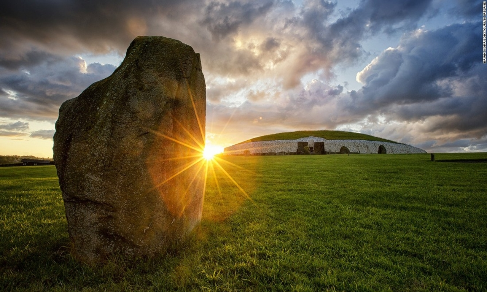

Newgrange
"A Passage to the Afterworld"
The Megalithic Passage Tomb at Newgrange was built about 3200 BC. The kidney shaped mound covers an area of over one acre and is surrounded by 97 kerbstones, some of which are richly decorated with megalithic art. The 19 metre long inner passage leads to a cruciform chamber with a corbelled roof. It is estimated that the construction of the Passage Tomb at Newgrange would have taken a work force of 300 at least 20 years
The passage and chamber of Newgrange are illuminated by the winter solstice sunrise. A shaft of sunlight shines through the roof box over the entrance and penetrates the passage to light up the chamber. The dramatic event lasts for 17 minutes at dawn on the Winter Solstice and for a few mornings either side of the Winter Solstice.
Admission to the Newgrange chamber for the Winter Solstice sunrise is by lottery, application forms are available at the Brú na Bóinne Visitor Centre. About 30,000 applications are submitted annually. In September each year, 50 names are drawn with 2 places are awarded to each person drawn.
Newgrange - Ticket Prices
Megalithic mounds such as Newgrange entered Irish mythology as sídhe or fairy mounds. Newgrange was said to be the home of Oenghus, the god of love. The Passage Tomb at Newgrange was re-discovered in 1699 by the removal of material for road building.

| Adult Ticket(s) | €7.00 |
| Child (12-17yrs) Ticket(s) | €4.50 |
| Child (under 12) Ticket(s) | FREE |
| Senior (60+) Ticket(s) | €6.00 |
| Student Ticket(s) | €4.00 |
Newgrange - Facts
1. Aligned with the Winter Solstice
On the Winter Solstice, the light of the rising sun enters the roof box of Newgrange and penetrates the passage, shining onto the floor of the inner chamber. The beam illuminates the inner chamber of Newgrange for just 17 minutes.
2. Built for an Ancient Irish King
According to ancient mythology, the Tuatha Dé Danann ruled Ireland were said to have built Newgrange as a burial place for their chief, Dagda Mór, and his three sons. One of his sons, named Aonghus, is often referred to as Aonghus of the Brugh. It is believed that he was owner of the Brugh land, and that a smaller mound between Newgrange and the Boyne was owned by the Dagda.
3. These ancient builders were highly skilled
They grooved the top surface of the passage-roof stones, thus showing they understood redirecting water seepage from the cairn. It has kept the passage water-proof. (No small task in Ireland!) Some archaeologists believe the Newgrange site was as high as 150 feet in some areas. The passage, the chamber, and the roof were all constructed, and have survived, without mortar. The builders filled the gaps between the roof stones in the passage with sea sand and burned soil to keep the passage dry.